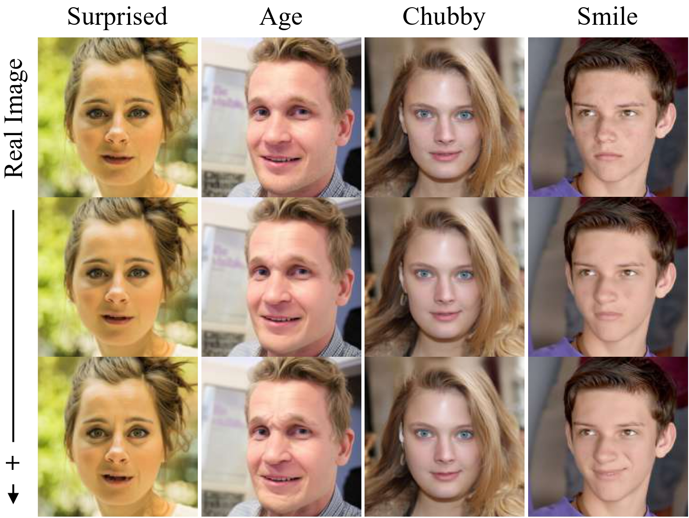

Zero-shot Generalization to FLUX and SD-3
Text Slider can be directly applied to transformer-based diffusion models such as FLUX.1-schnell and SD-3 without retraining, further demonstrating the strong generalizability of our method.

Recent advances in diffusion models have significantly improved image and video synthesis. In addition, several concept control methods have been proposed to enable fine-grained, continuous, and flexible control over free-form text prompts. However, these methods not only require intensive training time and GPU memory usage to learn the sliders or embeddings but also need to be retrained for different diffusion backbones, limiting their scalability and adaptability. To address these limitations, we introduce Text Slider, a lightweight, efficient and plug-and-play framework that identifies low-rank directions within a pre-trained text encoder, enabling continuous control of visual concepts while significantly reducing training time, GPU memory consumption, and the number of trainable parameters. Furthermore, Text Slider supports multi-concept composition and continuous control, enabling fine-grained and flexible manipulation in both image and video synthesis. We show that Text Slider enables smooth and continuous modulation of specific attributes while preserving the original spatial layout and structure of the input. Text Slider achieves significantly better efficiency: 5x faster training than Concept Slider and 47x faster than Attribute Control, while reducing GPU memory usage by nearly 2x and 4x, respectively.
Text Slider injects and fine-tunes the low-rank parameters ∆θ within the pre-trained text encoder τθ(·) of a text-guided diffusion model using contrastive prompts (e.g., c_t: person, c_+: old person, and c_-: young person) derived from concept representations. This enables continuous control over visual attributes across diverse model architectures, supporting both image and video synthesis tasks.
Combining SD-XL with Text Slider enables continuous attribute manipulation across diverse object categories, with controllable attribute intensity achieved by simply adjusting the inference-time scale.

Integrating AnimateDiff with Text Slider enables fine-grained and continuous attribute control across diverse object categories, such as person, hair, car, style, and scene, while preserving structural consistency throughout the video. For each video, representative frames are sampled to illustrate the gradual progression of attribute intensity over time.

We demonstrate the composability of Text Slider in both text-to-image (left) and text-to-video (right) generation by sequentially manipulating different attributes. The proposed approach preserves structural consistency while enabling fine-grained control over the target concepts at each editing stage.

Text Slider can be directly applied to transformer-based diffusion models such as FLUX.1-schnell and SD-3 without retraining, further demonstrating the strong generalizability of our method.
By inverting real images with ReNoise and applying our method, we achieve fine-grained attribute control on real images.
@inproceedings{chiu2025text,
title={Text Slider: Efficient and Plug-and-Play Continuous Concept Control for Image/Video Synthesis via LoRA Adapters},
author={Pin-Yen Chiu and I-Sheng Fang and Jun-Cheng Chen},
booktitle={IEEE/CVF Winter Conference on Applications of Computer Vision (WACV)},
year={2026}
}